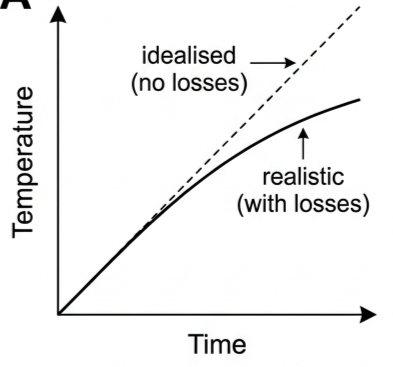
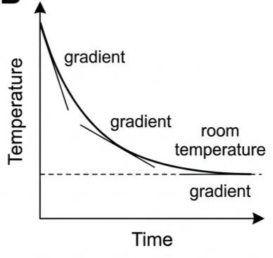
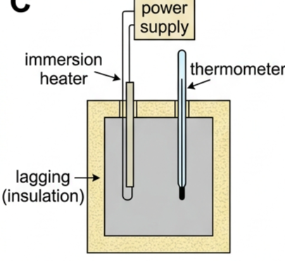
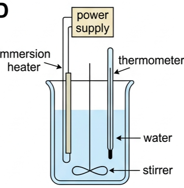

Part of B.1 Thermal Energy Transfers
· Unit B — IB Physics 2023
2 Lesson 2 of 5 · B.1 Thermal Energy Transfers
Specific Heat Capacity
Add the same volume of milk and water to two cups of coffee and the temperature drops by different amounts, because materials store thermal energy differently. Specific heat capacity puts a number on that difference, and lets you calculate exactly how much energy any heating or cooling process involves.
☕ Hook – the mystery of the cooling coffee
"You've just poured yourself a cup of coffee. You add a splash of cold milk. The temperature drops by 15°C. But here's the question: if you'd added the same volume of water at the same temperature, would the coffee cool by the same amount? Why or why not?"

Fig 1 — heating at a constant rate. The idealised line (dotted) assumes no energy losses, so temperature rises steadily. The realistic curve bends because thermal energy losses to the surroundings grow as the object gets hotter, until input power exactly balances heat loss.
💡 Class discussion (think – then read on) — why does the real heating curve bend, and why can't we just keep heating something forever? As an object's temperature rises above its surroundings, its rate of energy loss increases too. Eventually the input power is entirely balanced by that loss and the object reaches a steady state.
📉 Heating and cooling curves
The idealised heating line has a constant gradient: \(\text{gradient} = \Delta T/\Delta t\), meaning equal temperature rises in equal time intervals, with no losses to the surroundings. The realistic curve's gradient decreases with time, because thermal energy losses increase as the temperature difference with the surroundings grows — eventually reaching a steady state where input power equals the rate of energy loss.
A cooling curve shows the same idea in reverse: an object cools quickly at first, then more slowly as it approaches room temperature. The rate of cooling depends on the temperature difference between the object and its surroundings — the larger the difference, the faster the cooling.

Fig 2 — cooling to room temperature. The gradient is negative throughout and its magnitude decreases with time, shown by the three shallower and shallower tangent lines.
🔥 Defining specific heat capacity
Specific heat capacity is the amount of energy needed to raise the temperature of 1 kg of a substance by 1 K (or 1°C). Its symbol is \(c\), and its SI unit is J kg⁻¹ K⁻¹ (or J kg⁻¹ °C⁻¹).
⚠️ Common mistake alert: students frequently write the unit as J/kg/K or J/g/°C. Always write it as J kg⁻¹ K⁻¹.
Thermal energy transferred, rearranged for c
$$Q = mc\Delta T$$
$$c = \frac{Q}{m\Delta T}$$
Material
c / J kg⁻¹ K⁻¹
Copper
390
Aluminium
910
Water
4180
Air
1000
Dry earth
1250
Glass
800
Concrete
800
Steel
420
🔗 Class discussion — why does water have such a high specific heat capacity? How does this explain why coastal areas have milder climates than inland areas? Why is water used in car radiators and heating systems?
🧪 Laboratory experiments
Two standard setups measure specific heat capacity: an electrically-heated metal block with a thermometer in a separate hole, and an electrically-heated liquid in an insulated container with a stirrer.

Fig 3 — metal block experiment: heater and thermometer in separate holes, lagging reduces heat loss.

Fig 4 — water/liquid experiment: stirring ensures uniform temperature throughout the liquid.
Assumptions made: all of the substance is at the same temperature (requires stirring), no energy is transferred to or from the surroundings (requires insulation), and the thermometer reading is accurate at the relevant times.
⚠️ Sources of error: energy losses to the surroundings cause overestimation of specific heat capacity, since some of the input energy never reached the substance being measured. Temperature gradients within the substance and thermometer response time also introduce error.
✓ Minimizing errors: lagging (thermal insulation) around the apparatus, a joulemeter to measure energy directly, multiple readings averaged, and stirring for uniform temperature.
⚖️ Thermal capacity vs specific heat capacity
Thermal capacity (or heat capacity) is the amount of energy needed to raise a whole object's temperature by 1 K, with unit J K⁻¹. Use it for objects made of multiple materials — a kettle with water inside, or a room with its contents.
Thermal capacity · SI unit J K⁻¹
$$Q = C\Delta T$$
Gradient = rate of temperature rise; flattens to a steady state when input power = loss rate
Cooling to room temperature
Time / s · Temperature / °C
Curve falls steeply then flattens
Gradient is negative and its magnitude decreases with time; larger temperature difference means faster cooling
Fig 1 (above) — heating case.
Fig 2 (above) — cooling case.
✓ Examiner tip: interpreting gradients of temperature–time graphs is a core mathematics-connection skill — always state whether the gradient is increasing, decreasing, constant, positive or negative.
✍️ Worked example 1 – heating a metal block (B1.9)
A metal block of mass 1500 g is heated for 5 minutes with an 18 W heater. Temperature rises from 18.0°C to 27.5°C. Calculate the specific heat capacity.
1
Identify: the heater's energy output is \(Q = Pt\); this all goes into the block, so \(Q = mc\Delta T\) too.
✍️ Worked example 2 – thermal capacity of a kettle (B1.10)
How much thermal energy is needed to increase the temperature of a kettle and water from 23°C to 77°C if their combined thermal capacity is 4800 J K⁻¹?
1
Identify: the kettle and water together are one object of known thermal capacity, so use \(Q = C\Delta T\), not \(Q = mc\Delta T\).
✍️ Worked example 3 – calorimetry with a hot bolt (B1.11)
A metal bolt (26.5 g) heated to 312°C is placed in 294 g of water at 22.1°C. The water reaches 24.7°C. (a) Why stir the water? (b) Calculate the thermal energy transferred from bolt to water. (c) Determine the specific heat capacity of the bolt. (d) Which metal is it?
1
Identify: assuming no losses to the surroundings, energy lost by the bolt equals energy gained by the water. (a) The water is stirred to ensure a uniform temperature throughout.
2
Data: water \(m=0.294\) kg, \(c=4180\), \(\Delta T = 24.7-22.1=2.6\)°C. Bolt \(m=0.0265\) kg, \(\Delta T = 312-24.7=287.3\)°C.
3
Equation (b): \(Q_{\text{water}} = mc\Delta T\) Equation (c): \(Q_{\text{gained by water}} = Q_{\text{lost by bolt}}\)
Fig 5 — a hot bolt transferred quickly into cold water. Assuming no energy is transferred to or from the surroundings, the bolt's energy loss equals the water's energy gain.
🌊 Real-world: why water moderates climate
Water's specific heat capacity (4180 J kg⁻¹ K⁻¹) is far higher than most everyday materials, so it absorbs or releases a large amount of thermal energy for only a small change in temperature. This is why coastal areas have milder climates than inland areas at the same latitude — the ocean warms and cools much more slowly than land. The same property is why water is used in car radiators and central heating systems: it can carry away or deliver large amounts of thermal energy without its own temperature swinging wildly.
✓ Examiner tip: always name the mechanism, not just the fact. "Water has a high c" earns little; "water's high specific heat capacity means it needs to absorb or release a large amount of energy for its temperature to change, so it changes temperature slowly" earns the mark.
🚀 HL extension – molar heat capacity and kinetic theory
Different materials store energy differently at the molecular level, which is why specific heat capacities vary so much. Multiplying \(c\) by molar mass gives the molar heat capacity, the energy needed to raise one mole of a substance by 1 K — a quantity that connects directly to kinetic theory and the number of ways a molecule can store energy (translational, rotational, vibrational).
Challenge: two gases receive the same energy per mole. One rises in temperature by more than the other. What does this tell you about the number of ways each gas's molecules can store energy? The gas with the greater temperature rise has the lower molar heat capacity — its molecules have fewer ways to store the input energy internally (e.g. a monatomic gas storing energy only as translational kinetic energy), so more of the input energy shows up as a measurable temperature rise.
⚠️ Trap corner – common mistakes
Misconception
Correct view
Heat capacity is the same as specific heat capacity
They differ by mass: \(c\) is per kg of material, \(C\) is for the whole object
Specific heat capacity changes with temperature
It is treated as a material constant over moderate temperature ranges
Energy lost to surroundings leads to underestimation of \(c\)
It leads to overestimation — some input energy never reached the substance, so the calculation attributes too much heating power to it
Temperature change in K and °C are different quantities
They are numerically identical — a change of 1°C is a change of 1 K, just shifted by 273
⚠️ Most common exam slip: writing the unit of \(c\) as J/kg/K instead of J kg⁻¹ K⁻¹.
Q = mcΔTc: J kg⁻¹ K⁻¹, material propertyQ = CΔTC: J K⁻¹, whole-object propertycalorimetry: Qlost = Qgainedwater c = 4180 (very high)lagging reduces energy losslosses cause overestimation of c
Practice check — multiple choice
1. What is the correct SI unit for specific heat capacity?
A J K⁻¹
B J kg⁻¹ K⁻¹
C J kg⁻¹
D W kg⁻¹ K⁻¹
2. A 500 g block of aluminium requires 45,500 J to raise its temperature by 100°C. Its specific heat capacity is
A 91 J kg⁻¹ K⁻¹
B 455 J kg⁻¹ K⁻¹
C 910 J kg⁻¹ K⁻¹
D 4550 J kg⁻¹ K⁻¹
3. In a specific heat capacity experiment, some thermal energy is lost to the surroundings instead of heating the substance. The measured specific heat capacity will be
A underestimated
B overestimated
C unaffected
D exactly halved
4. Which statement correctly distinguishes thermal capacity from specific heat capacity?
A They are the same quantity with different names
B Thermal capacity has unit J kg⁻¹ K⁻¹
C Specific heat capacity depends on the mass of the object
D Thermal capacity applies to a whole object; specific heat capacity is a per-kg material property
5. Why is water used in car radiators and central heating systems?
A It is the cheapest liquid available
B Its low specific heat capacity lets it heat up instantly
C Its high specific heat capacity lets it carry large amounts of thermal energy for a manageable temperature change
D It has zero thermal capacity
Practice check — fill in the blanks
Complete the statements:
Specific heat capacity, symbol c, is the energy needed to raise the temperature of of a substance by , with SI unit . The equation relates thermal energy transferred to mass, specific heat capacity and temperature change. Thermal capacity, symbol , applies to rather than a specific mass, with unit . Wrapping an experiment in reduces energy loss to the surroundings; without it, the measured specific heat capacity is . In calorimetry, energy by the hot object equals energy by the cold object.
Exam‑style questions
Exam question · Calculate
Q47. Calculate the energy needed to raise the temperature of 3.87 kg of a metal by 54°C, given \(c = 456\ \text{J kg}^{-1}\text{K}^{-1}\). [2 marks]
Q49. A drink (mass 500 g, \(c=4180\ \text{J kg}^{-1}\text{K}^{-1}\)) in a glass (mass 250 g, \(c=850\ \text{J kg}^{-1}\text{K}^{-1}\)) cools from 25°C to 4°C. Calculate the total thermal energy transferred. [4 marks]
Q50. A 20 W heater heats a 2.0 kg iron block (\(c=444\ \text{J kg}^{-1}\text{K}^{-1}\)) starting at 24°C for 12 minutes. Determine the final temperature. [4 marks]
✓ \(Q = Pt = 20\times720 = 14\,400\ \text{J}\) ✓ \(\Delta T = \dfrac{Q}{mc} = \dfrac{14\,400}{2.0\times444}\) ✓ \(\Delta T = 16.2\)°C ✓ Final temperature \(= 24 + 16.2 = 40.2\)°C.
Exam question · Determine
Q52. A 9.0 kW water heater supplies a shower. Water enters at 15°C and flows at a rate of 15 kg every 3 minutes. Determine the shower temperature. [4 marks]
✓ Mass flow rate \(= 15/180 = 0.0833\ \text{kg s}^{-1}\) ✓ Energy per kg \(= 9000/0.0833 = 108\,000\ \text{J kg}^{-1}\) ✓ \(\Delta T = 108\,000/4180 = 25.8\)°C ✓ Final temperature \(= 15+25.8 = 40.8\)°C.
Exam question · Calculate
Q53. A gas cooker heats 500 g of water from 24°C to 80°C in 2 minutes. Calculate the power delivered. [3 marks]
Q54. A room has thermal capacity \(3.5\times10^{5}\ \text{J K}^{-1}\) and is heated by a 2.5 kW heater from 9°C to 22°C. Determine the time required. [3 marks]
Q55. What mass of water at 18°C must be mixed with 1.5 kg of water at 83°C to reach a final temperature of 55°C? [3 marks]
✓ Energy lost = energy gained: \(m_{\text{cold}}\times4180\times(55-18) = 1.5\times4180\times(83-55)\) ✓ \(m_{\text{cold}}\times37 = 1.5\times28\) ✓ \(m_{\text{cold}} = 42/37 = 1.14\ \text{kg}\).
Exam question · Calculate / Explain
Q56. Five coins (8.8 g each) are transferred from boiling water into 98 g of water at 20.7°C, which reaches 23.6°C. Calculate the specific heat capacity of the coins, and explain why they must be transferred quickly. [4 marks]
✓ Total coin mass \(= 5\times8.8 = 44\ \text{g} = 0.044\ \text{kg}\) ✓ Energy gained by water \(= 0.098\times4180\times(23.6-20.7) = 1187\ \text{J}\) ✓ \(1187 = 0.044\times c\times(100-23.6)\), so \(c = 353\ \text{J kg}^{-1}\text{K}^{-1}\) ✓ Transferring quickly minimizes thermal energy loss to the surroundings during transfer.
Exam question · Calculate
Q57. Burning 5.6 g of wood raises 480 g of water from 22.7°C to 64.6°C in a calorimeter. Calculate (a) the energy transferred to the water and (b) the energy released per kg of wood. [3 marks]
✓ (a) \(Q = 0.480\times4180\times(64.6-22.7) \approx 84\,000\ \text{J}\) ✓ (b) Energy per kg \(= 84\,000/0.0056\) ✓ \(= 1.5\times10^{7}\ \text{J kg}^{-1}\).